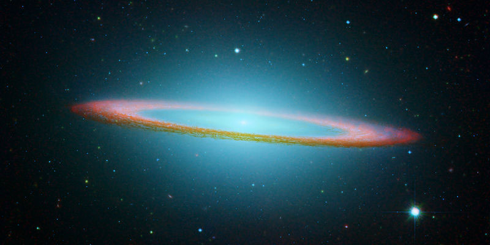

Space Exploration
From this distant vantage point, the Earth might not seem of any particular interest. But for us, it's different. Consider again that dot. That's here. That's home. That's us. On it everyone you love, everyone you know, everyone you ever heard of, every human being who ever was, lived out their lives. The aggregate of our joy and suffering, thousands of confident religions, ideologies, and economic doctrines, every hunter and forager, every hero and coward, every creator and destroyer of civilization, every king and peasant, every young couple in love, every mother and father, hopeful child, inventor and explorer, every teacher of morals, every corrupt politician, every "superstar," every "supreme leader," every saint and sinner in the history of our species lived there – on a mote of dust suspended in a sunbeam.
~ Carl Sagan on The Pale Blue Dot, a photograph of planet Earth taken in 1990 by the Voyager 1 spacecraft from a record distance of about 6 billion kilometers from Earth
View Larger Map


- 